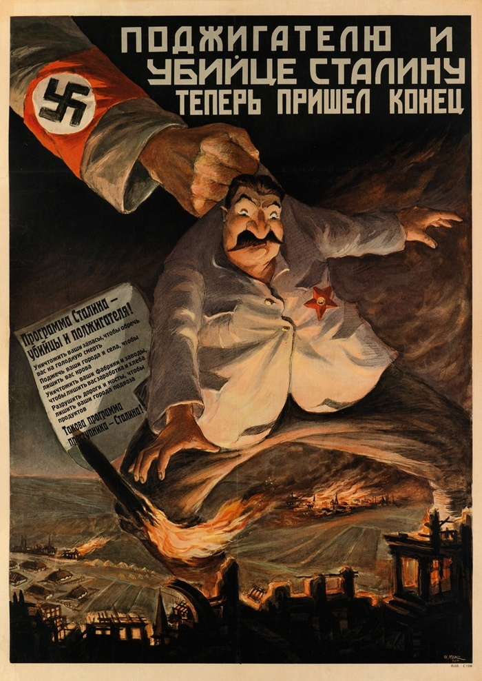
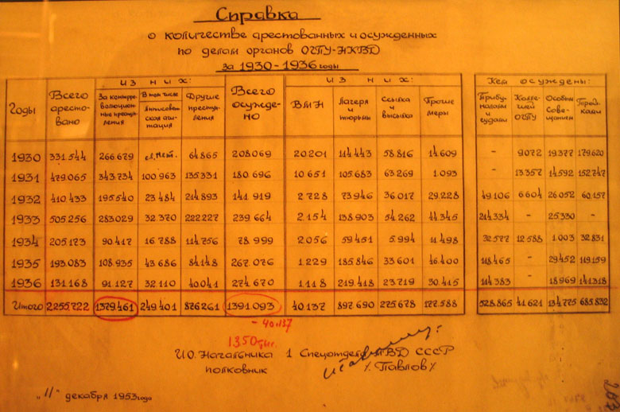
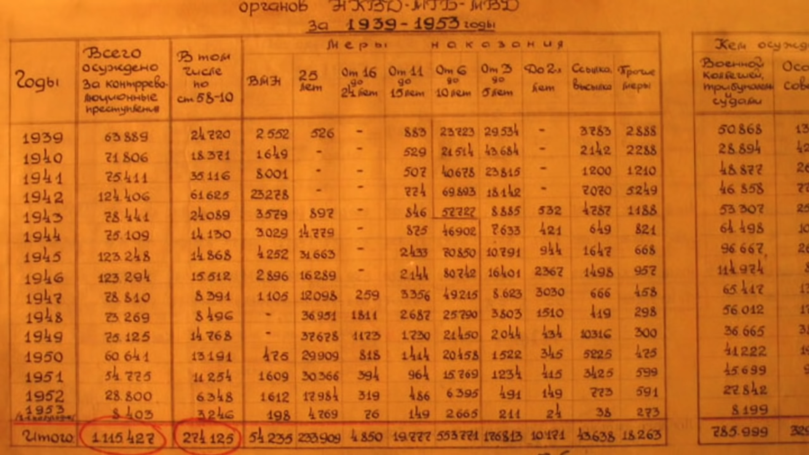

Главный миф о Сталинских репрессиях

Миф:
Сталин был один из ужаснейших тиранов человечества, за годы своего правления он репрессировал 100млн человек.
Реальность:
За всё время правления, Сталин репрессировал не больше 1млн человек.
Противоречие 1:
Население Российской империи в 1990 году составляло 125млн человек. До прихода Сталина к власти произошло три войны (русско-японская, первая мировая война, гражданская война). Общие потери этих войн составляют около 20млн человек. Если бы Сталин расстрелял 100млн человек, население СССР равнялось бы НОЛЬ.
Противоречие 2:
Где скелеты репрессированных? Выходит где-то под Россией сейчас лежит 100млн скелетов?
Факты:
Вот три документа из архива РФ



Как вы видите за всё время правления Сталина, было репрессировано не больше 1млн человек.